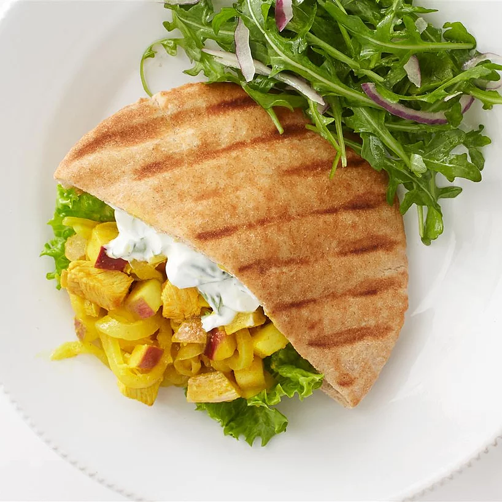

Apple Curry Turkey Pita

Lovely Apple Curry Turkey Pita
This is great for turkey leftovers. Simple, quick and flavorful.
This is a good one for substitutions too.
I've used white wine in place of lemon, sour cream in place of yogurt,
chicken in place of turkey and Indian naan in place of the pita. Enjoy!
Ingredients
- 2 tablespoons olive oil
- 1 cup sliced onion
- 2 tablespoons lemon juice
- 1/2 pound cooked turkey, cut into chunks
- 1 tablespoon curry powder, or to taste
- 1 medium apple, cored and thinly sliced
- 3 pita bread rounds
- 1/2 cup plain yogurt
- heat oil in a skillet over medium-high heat. stir in onion and lemon
juice. cook until onion is tender. mix in turkey, season with curry powder
and continue cooking until heated through.
-
remove from heat. stir in apple. stuff pitas with the mixture. drizzle with
yogurt to serve.